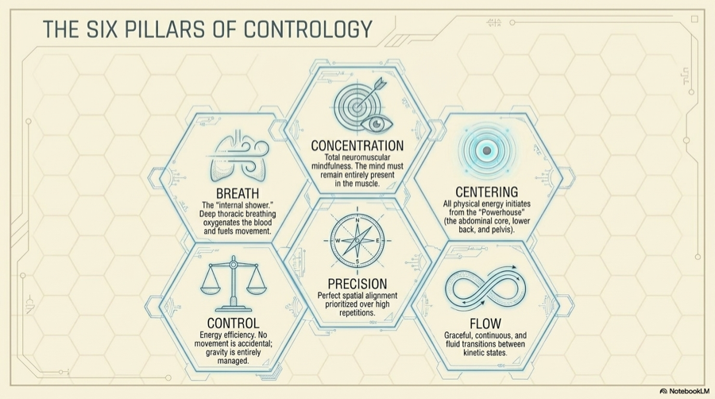
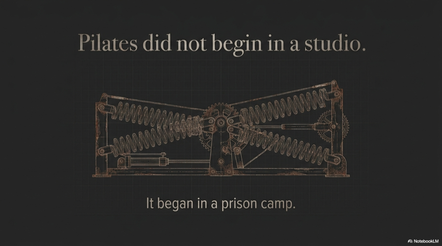
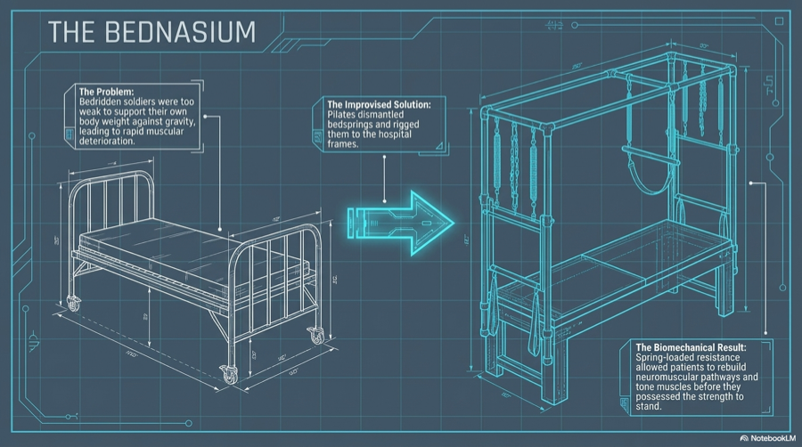
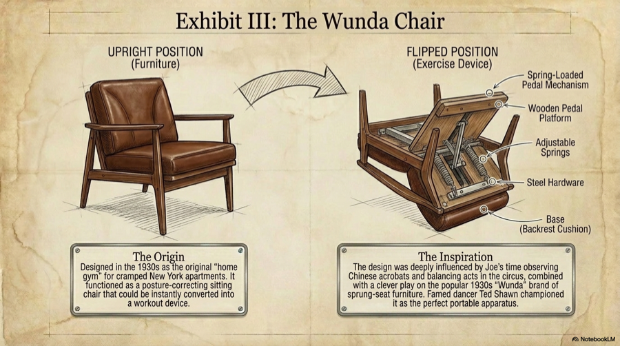
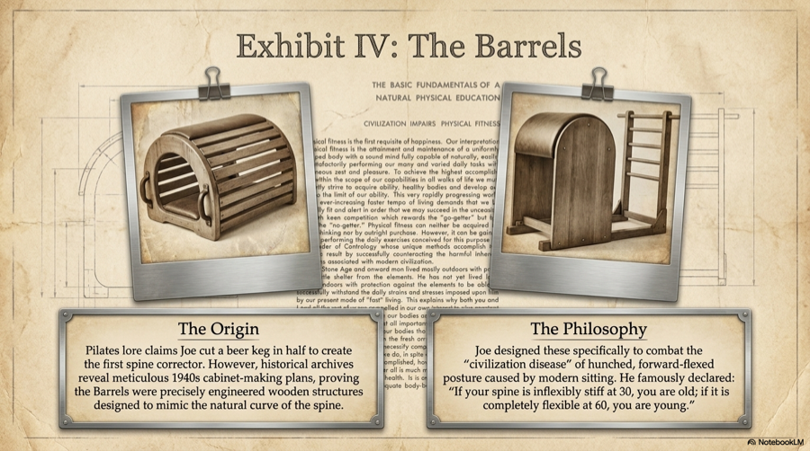
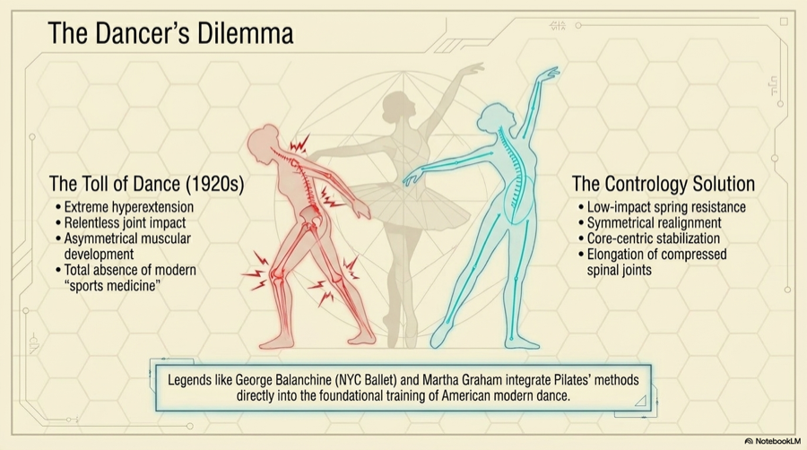
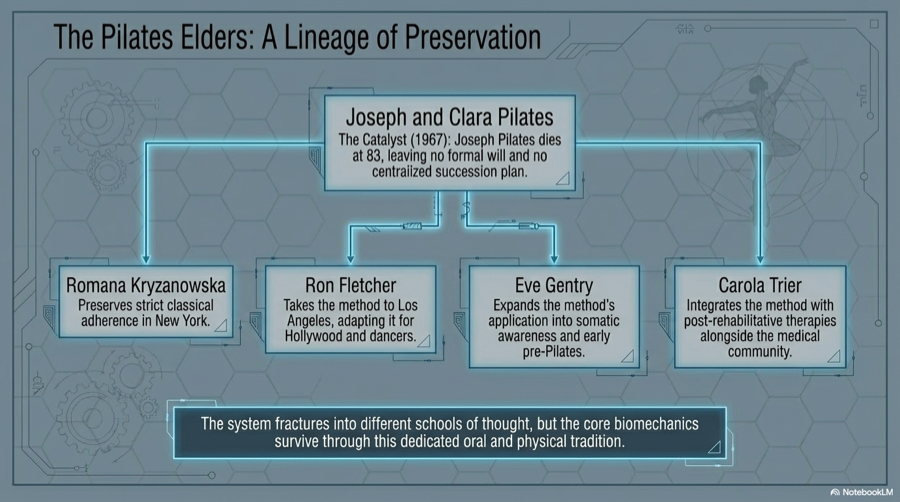
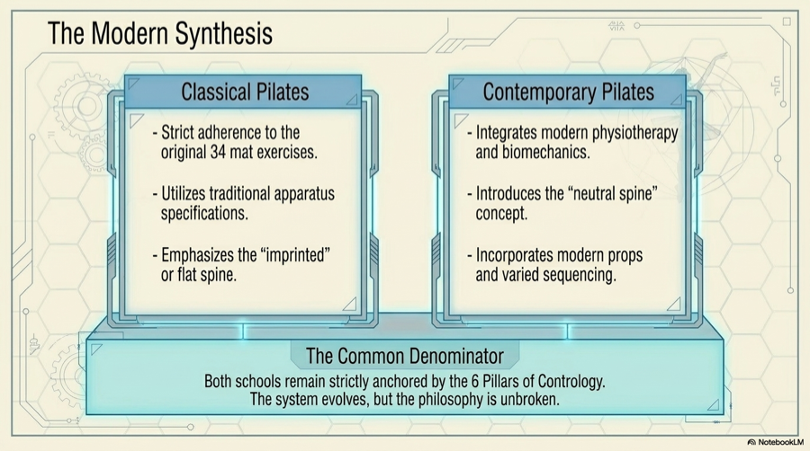
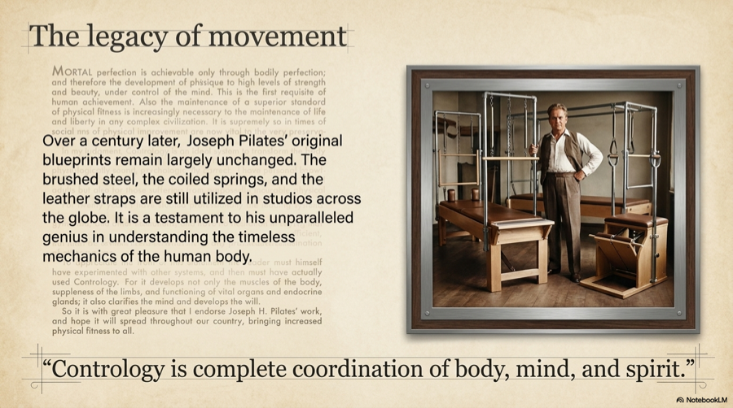

Reading path
Pilates Explained Articles
Thirteen launch articles make the site more than a thin beginner page. Start with Contrology, move through Joseph Pilates and the equipment, then follow the method into Clara Pilates, original books, dance, lineage, yoga comparisons, and the modern global split.
Free guide
Download the comparison chart
Keep the Classical Pilates, Contemporary Pilates, and Lagree comparison handy while you read the history and decide what kind of class makes sense for you.
Powered by Kit. You can unsubscribe at any time.
Launch library
Story-first history for Pilates beginners

01What Is Contrology?
The original name and philosophy behind Pilates.

02Who Was Joseph Pilates?
A founder biography beyond the usual summary.

03The Prison Camp Origins
How confinement shaped the first equipment ideas.
 04
04
History of the Reformer
The machine that made spring resistance iconic.
 05
05
History of the Cadillac
From hospital-bed logic to a complete studio ecosystem.

06History of the Wunda Chair
Compact, upright, and brutally revealing.

07Barrels and Spinal Decompression
The equipment family built around arcs and extension.

08Pilates and Dance History
Why dancers became the method's credibility channel.

09The Pilates Elders and Lineage
How first-generation teachers preserved and changed the work.

10Classical vs Contemporary Pilates
Trademark, expansion, and the modern identity split.
11Clara Pilates: The Untold Partner
The teacher, operator, and continuity figure behind the studio.

12Your Health (1934)
Joseph Pilates' first book and the health philosophy before Return to Life.
13Pilates vs Yoga
Two body-mind methods with parallel histories and different aims.